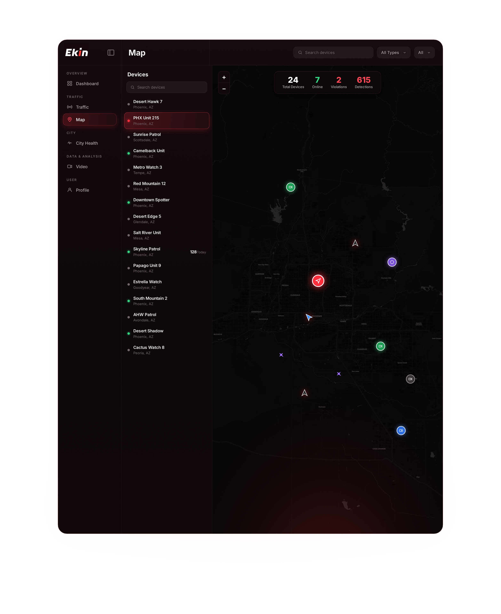

4K video, real-time & stored
Monitor traffic and safety and gather evidence in the event of a crime.
Control all your smart-city devices through a single AI-powered central management hub.
Maestro OS brings together video, AI, alerts, traffic, environment and security in one command platform.
Monitor traffic and safety and gather evidence in the event of a crime.
Identify suspects and vehicles with greater accuracy and speed.
Automatic notifications reduce emergency response times and improve outcomes.
Gather data and intelligently route traffic during rush hour.
Measure temperature, humidity and more to use resources more efficiently.
All data captured and transmitted to your hub is fully encrypted.
Monitor detections, violations, device status, recent alerts, and operational trends through a centralized dashboard designed to provide a clear overview of connected activity.
Maestro OS brings fixed and mobile Ekin technologies together, providing centralized visibility into device locations, operational status, and activity across connected areas.
Fixed or mobile, every connected Ekin solution contributes to one operational picture.

Maestro OS adapts connected intelligence and operational visibility to different environments and teams.
See live video, AI detection, alerts and analytics, first hand.
Book a Demo →
We are proud to be a leading city in innovation and technology. This smart pole with safety cameras, public Wi-Fi, traffic and environmental sensors will assist emergency management in creating a safer community for residents, business owners, and visitors.
Book a demo and see Maestro OS unify video, AI detection, alerts, traffic and environmental data in a single command hub.